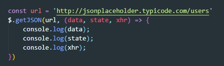
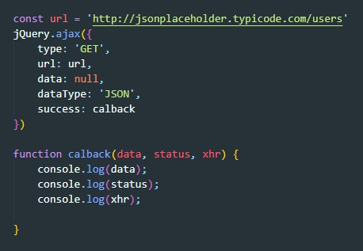

Этот метод позволяет загрузить данные с сервера и разместить, возвращенный HTML код внутри необходимых элементов .Метод принимает три аргумента:
Метод загружает url адрес и разбирает его как текст в формате JSON Полученный объект передается callback функции в первом аргументе
принимает всего один аргумент - объект с параметрами свойства которого определяют детали выполнения Ajax запроса
type - метод запроса (GET, POST и т.д.)
url - URL адрес
data - данные для отправки POST запроса
dataType - тип ожидаемых данных в ответе (text, html, script, json, xml)
timeout - предельное время ожидания в милисекундах
context - определяют объект используемый в качестве контекста для значения ссылки this
beforeSend - определяет функцию, которая будет вызываться перед отправкой Ajax запроса. Если эта функция вернет false, выполнение AJAX запроса будет прервано.
success - определяет функцию которая булет выполнена после успешного выполнения AJAX запроса. В первом аргументе этой функции передаютра полученные даннык, во втором код состояния, в третьем объект XHR
error - определяет функцию, которая будет выполнена в случае неудачи запроса. В первом аргументе передается XHR объект, во втором код состояния.
complete - определяет функцию, которая будет вызываться по завершении AJAX запроса при любом раскладе.
async - если присвоить этому свойству значение false, библиотека jQuery будет блокировать работу сценария до получения ответа.